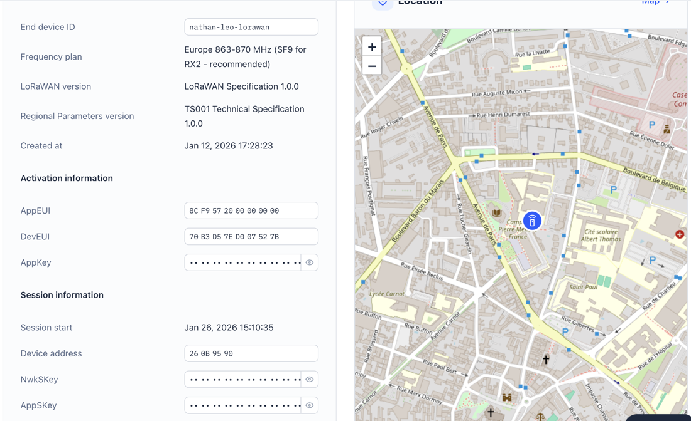

ROM1 · AC24.01
Administrer les réseaux d'accès fixes et mobiles
Réalisé — Configuration de l'objet sur TTN (activation OTAA, canaux EU868, puissance 14 dBm) et analyse des trames montantes (uplink).
Analyse — Manipuler un vrai réseau d'accès LPWAN (duty-cycle, spreading factor, OTAA) m'a fait comprendre ses contraintes bien mieux qu'un cours théorique.

Auto-évaluation : 3/4 — Maîtrisé